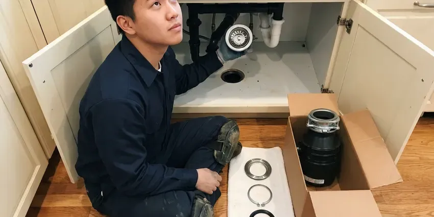
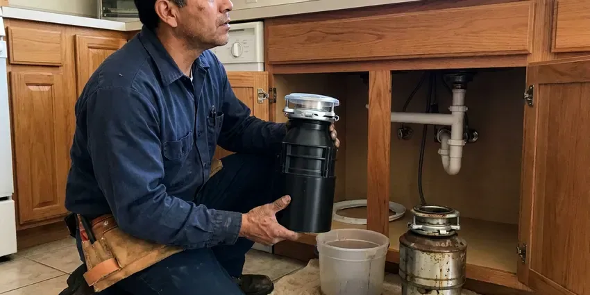
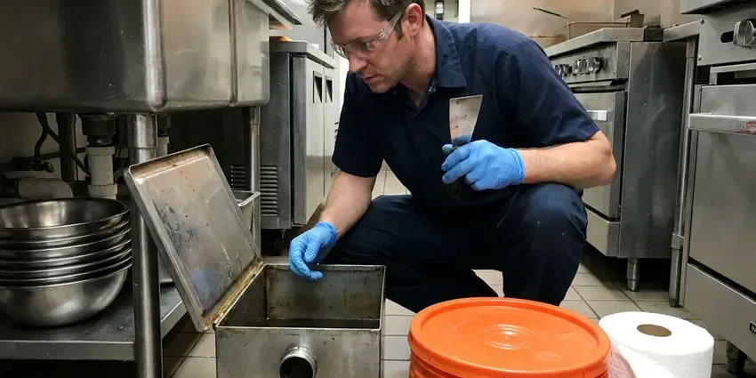

Kitchen Plumbing in West Haven, CT
GLV Plumbing installs, repairs and services kitchen sinks, garbage disposals, dishwasher lines and grease traps across West Haven, CT.
- Upfront Pricing
- Residential and Commercial Kitchens
- Upfront Pricing
- Fast Service
Trusted Kitchen Plumbing Services in West Haven, CT.
Give us a call and a licensed plumber can usually be there the same day.
Dependable Kitchen Plumbing Services in West Haven, CT
GLV Plumbing knows kitchen drains take a beating from grease and food scraps. Homeowners on well water near West Haven should test regularly, since acidic water can cause blue-green stains and pinhole leaks in copper. All of that leads to clogs, jammed disposals and scaled-up faucets and lines. Our plumbers handle every part of the kitchen plumbing system so you don't have to call three different trades.
Our expertise includes:
- Professional grease trap maintenance and code compliance.
- Finding and clearing stubborn drain clogs.
- Drain cleaning and grease trap maintenance

Additional Kitchen Plumbing Services in West Haven, CT
Our kitchen plumbing services in West Haven, CT cover sinks, disposals, dishwashers, and grease traps so your kitchen stays clean, safe, and fully functional.




Garbage Disposal Installation near West Haven

Garbage Disposal Replacement in West Haven


Grease Trap Cleaning in West Haven

Customers
Why Choose GLV Plumbing for Kitchen Plumbing in West Haven, CT?
Our commitment to quality workmanship and customer satisfaction makes the difference. We ensure every kitchen plumbing job is completed to high standards, limiting disruption to your daily life.
- Quality Parts, We only use dependable, reliable parts and materials to ensure long-lasting solutions for your kitchen.
- Qualified Team, Our plumbers are licensed, insured, and regularly trained on the latest plumbing technologies and safety practices.
- Stocked Trucks, Disposals, traps, valves and supply lines are stocked on every truck.
Citywide Coverage
We make sure that residents across West Haven have access to expert kitchen plumbing services. Our local presence means faster response times and plumbers familiar with the area's common building types.
Experienced Team
The technicians at GLV Plumbing are not just skilled, they are experienced in kitchen plumbing. They stay updated on the latest fixture models and repair techniques to provide the best service in West Haven.
Safety-First Approach
Every kitchen plumbing job we take on in West Haven is performed with the highest regard for safety. We make sure all installations and repairs meet current Connecticut plumbing standards.
Trusted Certified West Haven Plumbing Services Professionals
At GLV Plumbing, we take pride in providing licensed, certified plumbing services throughout West Haven, CT. Backed by leading industry credentials, our experienced plumbers combine technical skill with genuine customer care. Whether it is repair, installation, or maintenance, we follow strict safety and quality standards to deliver lasting results you can trust.
Call Us Now PHCC Plumbing Contractor Recognition
PHCC Plumbing Contractor Recognition Better Business Bureau (BBB) Accreditation
Better Business Bureau (BBB) Accreditation Angi Certified Pro
Angi Certified Pro ISO 9001 Quality Management Certification
ISO 9001 Quality Management CertificationFull-Service Kitchen Plumbing Services in West Haven, CT
Garbage Disposal Repair in West Haven, CT
Is your garbage disposal humming but not grinding, or worse, completely jammed? Our technicians are experts in diagnosing and repairing all common garbage disposal problems. We can clear clogs, fix motor issues, and replace worn-out components for brands like InSinkErator, Waste King, and Moen. Don't let food waste pile up, we will get your disposal running smoothly again in West Haven, CT.

Kitchen Drain Clog Clearing in West Haven, CT
Kitchen drains are prone to clogs from food particles, grease, and soap scum. Our plumbers use professional tools like augers and hydro-jetting to effectively clear stubborn blockages from kitchen sinks and main lines in West Haven, CT. We don't just clear the clog, we find the cause to help prevent future issues, so your kitchen drains flow freely. Avoid harsh chemical drain cleaners that can damage your pipes.
Garbage Disposal Installation and Replacement in West Haven
We install new disposals and replace worn ones with models from InSinkErator, Waste King and Moen. We match horsepower to your household, from 1/3 HP to 1 HP units for heavy use. Each install includes a new mount, discharge tube and dishwasher knockout when needed. We test the unit and check for leaks before we leave.
InSinkErator Installation in West Haven, CT
InSinkErator is one of the most popular disposal brands, and we install the full line from Badger to Evolution series. We use the brand's quick-lock mounting and follow its specs for electrical and drain connections. Upgrading to a quieter Evolution model is a popular request. We also register the warranty for you.
Grease Trap Cleaning in West Haven
Regular grease trap cleaning is vital to prevent foul odors, backups, and costly plumbing emergencies. Our team offers complete grease trap cleaning and maintenance services, removing accumulated fats, oils, and grease (FOG). We help West Haven businesses stay compliant with health codes and keep their drainage systems clear and functional.
Garbage Disposal Installation in West Haven
If your old disposal is beyond repair or you are adding one for the first time, GLV Plumbing offers hassle-free garbage disposal installation. We help you choose the right horsepower and capacity for your household needs and connect it cleanly to your existing sink and electrical connections. Proper installation is essential to avoid leaks and ensure efficient operation in your West Haven kitchen.
InSinkErator Installation & Service in West Haven
As a leading brand, InSinkErator garbage disposals are known for their dependability and performance. GLV Plumbing provides professional InSinkErator installation, ensuring your new unit is correctly wired and plumbed for optimal function. We also offer repair and maintenance services for existing InSinkErator models in West Haven, addressing common issues like motor hums, grinding noises, and leaks. Trust us to keep your InSinkErator running smoothly.

Emergency Kitchen Plumbing in West Haven, CT
Kitchen plumbing emergencies, like burst pipes under the sink or a completely blocked main drain, require immediate attention. GLV Plumbing provides quick, reliable emergency kitchen plumbing services throughout West Haven, CT. Our plumbers are equipped to diagnose and repair urgent issues quickly, limiting damage and restoring your kitchen's functionality. Feel free to call us anytime you face a critical kitchen plumbing problem.
Kitchen Plumbing Near Me in West Haven, CT
Our local presence means we can offer quick response times for kitchen plumbing emergencies and routine service calls throughout West Haven. You can trust our team to provide knowledgeable and friendly service, making sure your kitchen plumbing issues are resolved quickly and correctly.
We also work with local restaurants and food service businesses. We know the inspection and grease management rules they face. That makes us a dependable partner for both homes and commercial kitchens.
GLV Plumbing at a Glance
- Fully licensed plumbing team covering West Haven, CT
- 24/7 emergency service with same-day scheduling
- Clear written estimates, no hidden fees
- 4.8-star rated by 946+ Connecticut customers
West Haven Map
West Haven Information
- Population
- 54,790
- Area codes
- 203/475/860
- Service area
- West Haven and communities within 40 miles
- Nearby
- New Haven, Milford, Bridgeport, Waterbury
Mineral scale, heavy grease use and older drain lines wear down kitchen plumbing over time, so regular professional service keeps sinks, disposals and drains working in West Haven, CT.
Expert Services
Trust our professionals for reliable GLV Plumbing solutions in West Haven, CT.
Our Specialized Plumbing Services in West Haven, CT
At GLV Plumbing, we provide a complete range of plumbing services across West Haven, CT. From leak detection to full system installations, our team ensures fast, precise, and affordable service for both residential and commercial properties. Explore our core services below:


How Our Kitchen Plumbing Process Works in West Haven, CT
Here is how we get your kitchen back to normal.
Request a Quote
Contact us at (860) 487-7330 or fill out our online form to schedule your kitchen plumbing service. We'll gather details about your issue and set up a convenient appointment time.
On-Site Assessment
A licensed plumber will arrive at your West Haven home, diagnose the kitchen plumbing problem, and explain the needed repairs or installation options. You'll receive a clear, upfront estimate.
Expert Service
Once you approve, our technician will perform the work efficiently and meticulously, using quality parts and following all local plumbing codes. We ensure your kitchen plumbing is restored or upgraded properly.
Frequently Asked Questions About Kitchen Plumbing in West Haven
The cost of kitchen plumbing repair in West Haven varies a lot depending on the specific issue. Simple clog removals might range from $150 to $300, while a new garbage disposal installation could be $350 to $600 including the unit. Major pipe repairs or replacements could exceed $800. We always provide upfront pricing after an on-site assessment.
We install InSinkErator, Waste King, Moen and GE disposals. We help you pick the right horsepower for your household.
If the unit is under eight years old and just jammed, repair often works. If it leaks from the housing or the motor is failing, replacement is usually better.
While it's possible for experienced DIYers, professional installation is the safer choice. It involves electrical wiring, secure plumbing connections, and ensuring proper drain alignment. Incorrect installation can lead to leaks, electrical hazards, or damage to your sink and pipes. Our plumbers in West Haven ensure safe and compliant installation.
We service and install all major brands of garbage disposals, including InSinkErator, Waste King, Moen, KitchenAid, and GE. Our technicians are familiar with various models and can recommend the right unit for your specific needs and budget.
For commercial kitchens in West Haven, grease traps should typically be cleaned every 1 to 3 months, depending on the volume of use and local regulations. For residential use, if you have a grease trap, annual inspection and cleaning are usually enough.
If your garbage disposal is more than 8 to 10 years old, frequently jams, or requires expensive parts for repair, replacement is often the more cost-effective long-term solution. Newer models are also more energy-efficient and quieter.
Simple tasks like tightening a trap are fine for DIYers. Disposal wiring, dishwasher drains and grease traps are better done by a pro to avoid leaks and code problems.
What People Are Saying About Our Plumbing Experts?

Emily R.
I called GLV Plumbing for plumbing repair, and the technician was fast, polite, and thorough. They explained the problem clearly and fixed it the same day. I will definitely hire them again. Highly recommended!
Plumbing Repair · New Haven, CT
Laura S.
I scheduled a water heater replacement, and the team made the process smooth and affordable. The new unit works perfectly, and they cleaned up after completing the job.
Water Heater Replacement · Meriden, CT
Daniel K.
A pipe burst at 11 pm and they actually answered. The plumber showed up within the hour, shut everything down, and had us back to normal the next morning. Could not ask for more.
Emergency Plumbing · Milford, CT
Mark T.
When our office needed drain cleaning, GLV Plumbing provided quick, reliable service. The plumber arrived on time and made sure every drain flowed perfectly before leaving. Very satisfied.
Drain Cleaning · West Haven, CT
Robert G.
The trenchless sewer replacement saved our front yard. They walked us through the camera inspection footage first so we knew exactly what we were paying for.
Sewer Line Replacement · Waterbury, CTSofia M.
Two new toilets installed in one visit, no mess left behind, and the tech even adjusted a faucet he noticed was dripping. Fair pricing and really friendly.
Toilet Installation · Waterbury, CT